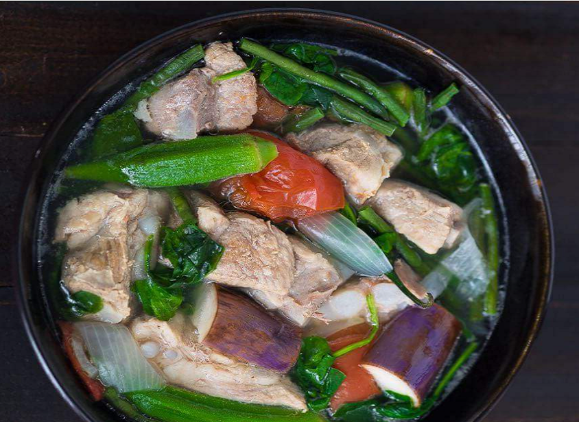
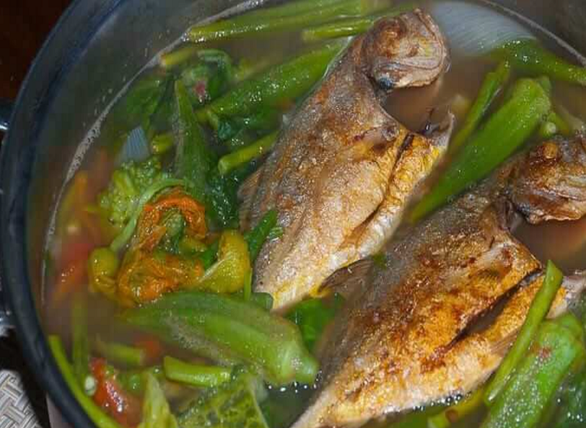

Verna Ledda | Food
|
Verna Ledda | Food
|
|
Food. Cooking is my stress reliever, when I am cooking I feel happy and mindful that's why I love trying out new recipes. My mom taught me how to cook at an early age and the first food I was able to cook was rice, yeah that's the basic I think. I listed here my Top 3 favorite foods, you can try them too and please feel free to leave your feedback below. Pork Adobo
1 / 3
The Filipino adobo is a cooking process or technique where meat, seafood, or indigenous vegetables are braised in a mixture of soy sauce and vinegar with aromatics such as garlic, onions, peppercorns, and bay leaves. As many and as diverse are the islands and dialects in the Philippines are the many ways adobo is prepared. With atsuete, in coconut milk or sweetened with pineapples are just a few versions of this classic Filipino national dish.
Sinigang

1 / 3
Sinigang is a sour soup native to the Philippines. This recipe uses pork as the main ingredient. Other proteins and seafood can also be used. Beef, shrimp, fish are commonly used to cook sinigang. The chicken version, on the other hand, is called sinampalukang manok. Pork shoulder and ham can also be used when cooking sinigang.
Dinengdeng (Vegetable Stew)

1 / 3
Dinengdeng or inabraw is a Filipino vegetable dish that originated from the Ilocos region in the Philippines. It is composed of different vegetables that are usually grown in one’s backyard. This dish has a similarity with bulanglang and laswa; the obvious difference of Dinengdeng is the use of fried or grilled fish. Another notable difference is the addition of “bagoong isda”.
|